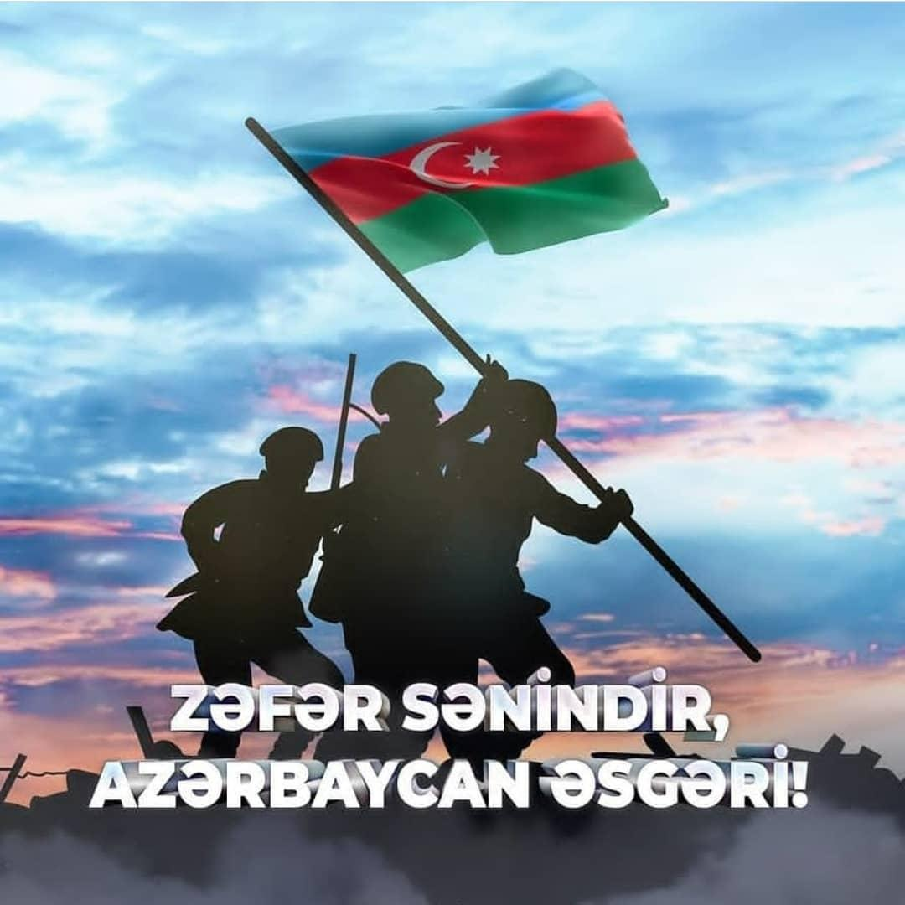

İkinci Qarabağ müharibəsi
İkinci Qarabağ müharibəsi, Vətən müharibəsi və ya "Dəmir Yumruq" əməliyyatı — Azərbaycan Silahlı Qüvvələri və Ermənistan Silahlı Qüvvələri arasında Dağlıq Qarabağda davam edən silahlı qarşıdurma. Atəşkəsdən sonra müşahidə olunan ən gərgin və uzunmüddətli döyüşdür. Beynəlxalq səviyyədə Azərbaycanın bir hissəsi kimi tanınan, lakin Ermənistan hökümətinin idarəetməsi altında yaradılan Qondarma Dağlıq Qarabağ Respublikası ilə bağlı həll olunmamış münaqişənin son gərginləşməsidir. Qarşıdurmalar 27 sentyabr 2020-ci il səhər saat 06:00-da Qarabağ müharibəsindən sonra yaradılmış təmas xətti boyunca başladı. Bunun ardınca Ermənistanda hərbi vəziyyət və ümumi səfərbərlik, Azərbaycan isə hərbi vəziyyət, komendant saatı və qismən səfərbərlik elan etdi. Türkiyə, bu dəstəyin dərəcəsi mübahisəli olsa da, Azərbaycana hərbi dəstək verdi.[59][60] Türkiyənin iştirakının, münaqişədə Azərbaycanın mövqeyini artırmaqla və Rusiyanın bölgədəki təsirini kənarlaşdırmaqla təsir dairəsini genişləndirmək cəhdi olduğu düşünülür. Beynəlxalq ekspertlər müharibənin Azərbaycanın hücumu ilə başladığını və əsas məqsədin bölgənin müdafiəsi zəif olan cənub bölgələrini işğaldan azad etmək olduğunu iddia edirlər.[64] Müharibə, pilotsuz təyyarələrin, sensorların, ağır artilleriyanın[65] və raket zərbələrinin istifadəsi, habelə dövlət təbliğatının və onlayn informasiya müharibəsində rəsmi sosial media hesablarının istifadəsi ilə yadda qalan oldu.[66] Çoxsaylı ölkələr və Birləşmiş Millətlər Təşkilatı döyüşləri kəskin şəkildə qınadı və hər iki tərəfi gərginliyi azaltmağa və mənalı danışıqları təxirə salmadan davam etdirməyə çağırdı.[67][68] Rusiya, Fransa və ABŞ-ın vasitəçiliyi ilə əldə olunan üç atəşkəs də müharibəni dayandıra bilmədi.[69] Dağlıq Qarabağdakı ən böyük ikinci şəhər olan Şuşanın azad edilməsindən sonra İlham Əliyev, Vladimir Putin və Nikol Paşinyan arasında 10 noyabr 2020-ci il, saat 00:00-dan (UTC+3) etibarən bütün döyüş əməliyyatlarını dayandıran atəşkəs bəyanatı imzalandı. Arayik Harutyunyan da döyüş əməliyyatlarının dayandığını təsdiqlədi.[73] Müqaviləyə əsasən, Azərbaycan müharibə zamanı işğaldan azad etdiyi ərazilərə nəzarəti əlində saxladı. Ermənistan isə işğal altında olan digər ətraf əraziləri Azərbaycana qaytardı. Azərbaycan, həmçinin Türkiyə və İranla həmsərhəd olan Naxçıvana dəhliz əldə etdi. Təxminən 2000 rus əsgəri Ermənistan və Dağlıq Qarabağ arasındakı Laçın dəhlizi boyunca ən azı 5 il müddətinə sülhməramlı qüvvələr olaraq yerləşdirildi.